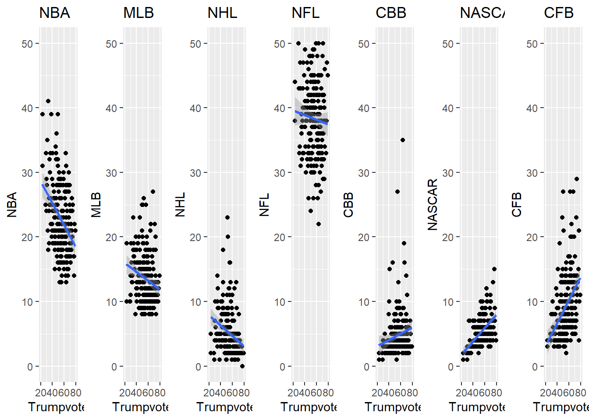

library(naniar)
library(tibble)
library(dplyr)
Attaching package: 'dplyr'The following objects are masked from 'package:stats':
filter, lagThe following objects are masked from 'package:base':
intersect, setdiff, setequal, unionlibrary(cowplot)
library(gridExtra)
Attaching package: 'gridExtra'The following object is masked from 'package:dplyr':
combinelibrary(ggplot2)
data1 <- read.csv("mod5/NFL_fandom_data-google_trends.csv",header = TRUE,skip=1)
a <- miss_var_summary(data1)
glimpse(data1)Rows: 207
Columns: 9
$ DMA <chr> "Abilene-Sweetwater TX", "Albany GA", "Albany-Schenec…
$ NFL <chr> "45%", "32%", "40%", "53%", "42%", "28%", "47%", "36%…
$ NBA <chr> "21%", "30%", "20%", "21%", "28%", "13%", "22%", "28%…
$ MLB <chr> "14%", "9%", "20%", "11%", "9%", "21%", "12%", "10%",…
$ NHL <chr> "2%", "1%", "8%", "3%", "1%", "12%", "2%", "3%", "3%"…
$ NASCAR <chr> "4%", "8%", "6%", "3%", "5%", "10%", "5%", "5%", "8%"…
$ CBB <chr> "3%", "3%", "3%", "4%", "3%", "7%", "3%", "5%", "4%",…
$ CFB <chr> "11%", "17%", "4%", "6%", "12%", "9%", "10%", "14%", …
$ Trump.2016.Vote. <chr> "79.13%", "59.12%", "44.11%", "39.58%", "69.64%", "63…data2 <-data1
data2[,1] <- data1[,1]
data2[,2:9] <- data.frame(sapply(data1[,2:9], function(x) as.numeric(gsub("%", "", x))))
colnames(data2)[9] ="Trumpvote"
glimpse(data2)Rows: 207
Columns: 9
$ DMA <chr> "Abilene-Sweetwater TX", "Albany GA", "Albany-Schenectady-Tr…
$ NFL <dbl> 45, 32, 40, 53, 42, 28, 47, 36, 39, 40, 48, 45, 39, 40, 45, …
$ NBA <dbl> 21, 30, 20, 21, 28, 13, 22, 28, 26, 29, 26, 20, 20, 29, 27, …
$ MLB <dbl> 14, 9, 20, 11, 9, 21, 12, 10, 8, 11, 14, 20, 19, 8, 12, 13, …
$ NHL <dbl> 2, 1, 8, 3, 1, 12, 2, 3, 3, 3, 3, 5, 9, 2, 1, 4, 5, 2, 9, 2,…
$ NASCAR <dbl> 4, 8, 6, 3, 5, 10, 5, 5, 8, 3, 4, 3, 8, 3, 4, 4, 5, 6, 7, 6,…
$ CBB <dbl> 3, 3, 3, 4, 3, 7, 3, 5, 4, 3, 1, 3, 2, 3, 2, 3, 4, 3, 3, 6, …
$ CFB <dbl> 11, 17, 4, 6, 12, 9, 10, 14, 13, 11, 3, 4, 3, 15, 9, 13, 7, …
$ Trumpvote <dbl> 79.13, 59.12, 44.11, 39.58, 69.64, 63.61, 77.54, 47.58, 52.7…p1 <- ggplot(data = data2, mapping = aes(x = Trumpvote, y = NBA))+geom_point()+xlim(20,80)+ylim(0,50)+ggtitle("NBA")+geom_smooth(method = "lm")
p2 <- ggplot(data = data2, mapping = aes(x = Trumpvote, y = MLB))+geom_point()+xlim(20,80)+ylim(0,50)+ggtitle("MLB")+geom_smooth(method = "lm")
p3 <- ggplot(data = data2, mapping = aes(x = Trumpvote, y = NHL))+geom_point()+xlim(20,80)+ylim(0,50)+ggtitle("NHL")+geom_smooth(method = "lm")
p4 <- ggplot(data = data2, mapping = aes(x = Trumpvote, y = NFL))+geom_point()+xlim(20,80)+ylim(0,50)+ggtitle("NFL")+geom_smooth(method = "lm")
p5 <- ggplot(data = data2, mapping = aes(x = Trumpvote, y = CBB))+geom_point()+xlim(20,80)+ylim(0,50)+ggtitle("CBB")+geom_smooth(method = "lm")
p6 <- ggplot(data = data2, mapping = aes(x = Trumpvote, y = NASCAR))+geom_point()+xlim(20,80)+ylim(0,50)+ggtitle("NASCAR")+geom_smooth(method = "lm")
p7 <- ggplot(data = data2, mapping = aes(x = Trumpvote, y = CFB))+geom_point()+xlim(20,80)+ylim(0,50)+ggtitle("CFB")+geom_smooth(method = "lm")
grid.arrange(p1,p2,p3,p4,p5,p6,p7, ncol=7, nrow =1)`geom_smooth()` using formula = 'y ~ x'Warning: Removed 1 rows containing non-finite values (`stat_smooth()`).Warning: Removed 1 rows containing missing values (`geom_point()`).`geom_smooth()` using formula = 'y ~ x'Warning: Removed 1 rows containing non-finite values (`stat_smooth()`).
Removed 1 rows containing missing values (`geom_point()`).`geom_smooth()` using formula = 'y ~ x'Warning: Removed 1 rows containing non-finite values (`stat_smooth()`).
Removed 1 rows containing missing values (`geom_point()`).`geom_smooth()` using formula = 'y ~ x'Warning: Removed 12 rows containing non-finite values (`stat_smooth()`).Warning: Removed 12 rows containing missing values (`geom_point()`).`geom_smooth()` using formula = 'y ~ x'Warning: Removed 1 rows containing non-finite values (`stat_smooth()`).Warning: Removed 1 rows containing missing values (`geom_point()`).`geom_smooth()` using formula = 'y ~ x'Warning: Removed 1 rows containing non-finite values (`stat_smooth()`).
Removed 1 rows containing missing values (`geom_point()`).`geom_smooth()` using formula = 'y ~ x'Warning: Removed 1 rows containing non-finite values (`stat_smooth()`).
Removed 1 rows containing missing values (`geom_point()`).